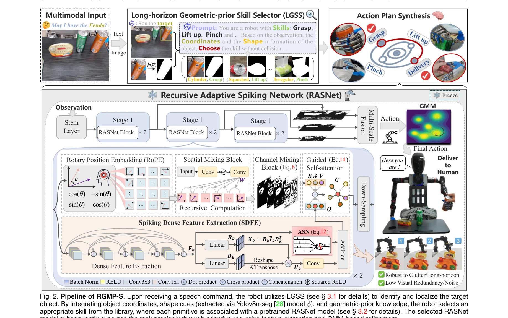

Essence

Fig. 1. Overview of our framework. By integrating geometric common-
RGMP-S는 기하학적 선행 정보와 spiking 신경망을 결합하여 인간형 로봇 조작을 위한 고수준 의미론적 추론과 저수준 동작 생성을 동시에 달성하는 프레임워크다.
저자: Xuetao Li, Wenke Huang, Mang Ye, Jifeng Xuan, Bo Du, Sheng Liu, Miao Li | 날짜: 2026-01-13 | URL: https://arxiv.org/abs/2601.09031
Fig. 1. Overview of our framework. By integrating geometric common-
RGMP-S는 기하학적 선행 정보와 spiking 신경망을 결합하여 인간형 로봇 조작을 위한 고수준 의미론적 추론과 저수준 동작 생성을 동시에 달성하는 프레임워크다.
Fig. 1. Overview of our framework. By integrating geometric common-

Fig. 2. Pipeline of RGMP-S. Upon receiving a speech command, the robot utilizes LGSS (see § 3.1 for details) to identify
총평: RGMP-S는 기하학적 추론과 spiking neural network을 창의적으로 결합하여 인간형 로봇 조작에서 기술 가능성 검증과 데이터 효율성이라는 두 가지 근본적 도전을 동시에 해결한다. 다양한 실제 로봇 플랫폼에서의 광범위한 검증과 19% 성능 향상, 5배 데이터 효율성 개선은 높은 실용적 가치를 입증한다.